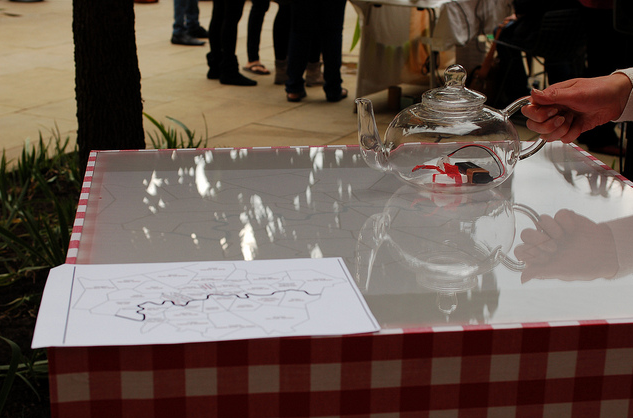
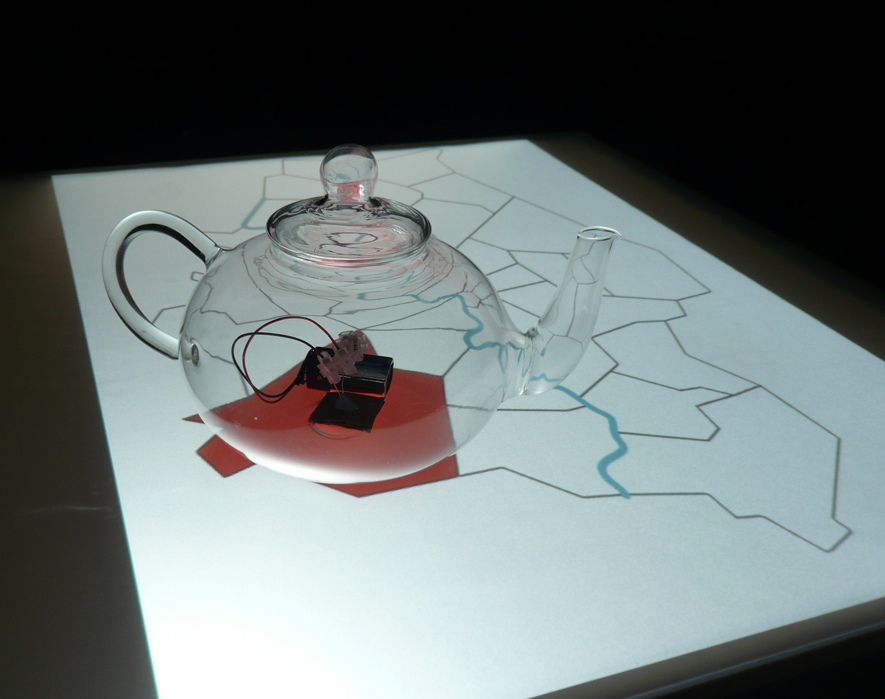
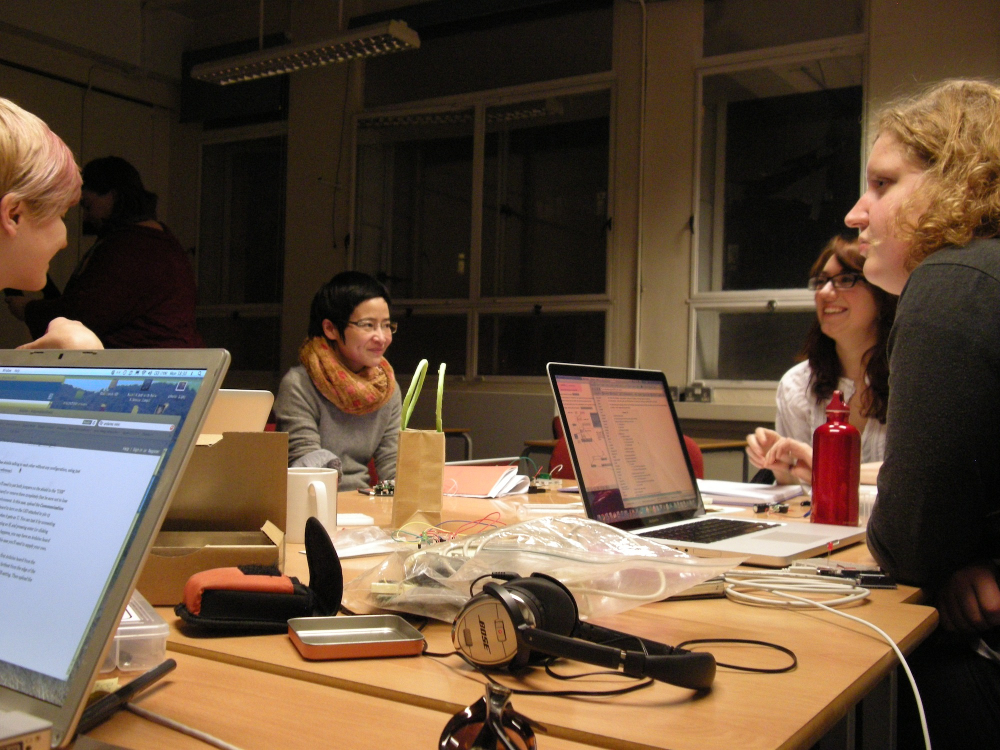
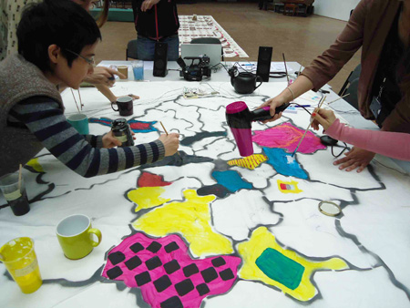
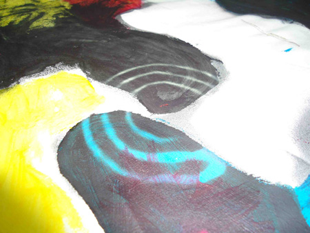
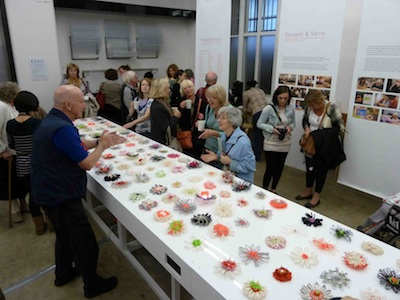
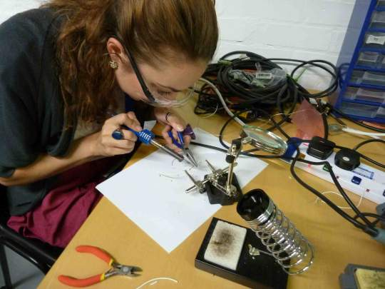
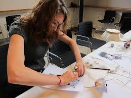

Projects with G.Hack
Between 2011 and 2012 Nicola was active in co-founding and developing interactive installations and running creative coding workshops with G.Hack. Some of the projects Nicola was involved with are detailed below.
Sound Mapping London Tea Houses: Interactive Installation originally exhibited @ London Design Festival, V&A Museum, London, 2011.
I co-developed an interactive table for sound mapping tea houses across London. Through mapping field recordings project investigates social and geographical landscape of contemporary tea drinking culture in London. The interactive tea table covered with a map of London activates a recording from a teahouse in each of the thirty-three London boroughs. A teapot marked with an infrared LED allows it to be tracked by a computer vision system. As the teapot is moved around the map, the vision system recognises which borough of London it has been placed on and plays the related tea house soundscape. G.Hack presented Sound Mapping London Tea Houses as participating artists in the Chi-TEK project.


T-Hack with G.Hack: Women-only 1-day workshop @ Space Studios, London, 2011.
I co-led a workshop based on teaching the techniques involved in the construction of the Sound Mapping London Tea Houses interactive table top, using infrared sensors. basic sound recording and editing, the basics of soldering components, as well as covering simple programming using Processing, MaxMsp and reacTIVision software.

Conductive Textiles and Thermochromic Inks 1-day workshop @ Central Saint Martins, London, 2012.
Nicola co-led a hands-on workshop for textile students at CSM. Students were invited to draw with conductive ink, paint with thermochromic ink, and stitch with silver conductive thread, in order to make a collaborative interactive artwork based on a London map. The TEXmap Afternoon Tea project saw students produce a responsive table cloth that plays sounds from tea houses all over London. After inks and threads were added to the table cloth, to make a colourful and individual piece, a specially configured tea-pot and mugs were placed on the material. The ceramic tea-pot released constant heat, and when placed on the thermochromic ink, the ink became transparent revealing the colours underneath. The mugs released sound from the tablecloth when placed on the embroidery, with the help of copper bases, cables and the Arduino microcontroller.


Threads and Yarns: Interactive Installation originally exhibited @ Wellcome Trust 75th Anniversary Symposium, V&A Museum, London, 2011.
I co-developed a large-scale interactive artwork created out of flowers woven by textile design students at Central Saint Martins. Viewers interacted with the 5×1 metre piece by hovering their hand over the woven flowers to trigger a sound bite. The sound bite played a first-hand account from seniors involved in the projects who shared their personal experiences of health and wellbeing over the past 75 years. We wove LEDs and proximity sensors into each flower to track the user and illuminate the flower associated with each story. Driven by Arduino.


Just a Switch 1-day workshop @ V&A Museum, London, 2011.
I co-led a hands-on workshop for the public visiting the V&A as a part of the Interweave festival. Participants were invited to make switches out of paper and graphite, conductive ink, conductive materials and stitch with silver conductive thread. With the help of an Arduino microprocessor and a sound mixer the participants made switches that turned on and off sounds bites produced in the workshop; the result was creating a collaborative sound performance with other worshop participants. The workhsop demontrated to the public how basic electronics can be embedded in regular household materials to promote how electronics can be creative, performative and accessible.

.jpeg)